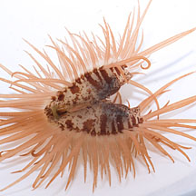
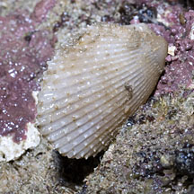
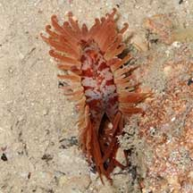

|
|
| molluscs text index | photo index |
| Phylum Mollusca > Class Bivalvia |
| File
clams Family Limidae updated May 2020 Where seen? These clams are sometimes seen our Southern shores, near reefs. What are file clams? File clams are bivalves that belong to Family Limidae. Features: 4- 6cm. Long, fleshy tentacles fringe the mantle which are sticky and detach easily when touched. Some species are attached to a hard surface by byssus threads, or building a nest lined with mingled byssal threads. Like scallops (Family Pectinidae), some file clam species can also 'swim'. They clap their shells together using a strong adductor muscle, creating directed jets of water that emerge from either side of the hinge and propels them in the opposite direction. To distract the disturber, the clam may shed wriggling tentacles. Unlike scallops, file clams can move using their tentacles to 'row' with the shell in a vertical position. What do they eat? Like many other bivalves, file clams are filter feeders. They use their siphons to suck in water and filter out microscopic food. The water also brings fresh oxygen to the animal. Status and threats: The Common file clam is listed as "Vulnerable" on the Red List of threatened animals of Singapore. |
|
 Swimming file clam can swim! Terumbu Pempang Tengah, Jul 12 |
 Common file clam stuck to a rock. Sisters Island, Aug 12 |
 Swimming file clam wedged in a crevice. St John's Island, Oct 20 Photo shared by James Koh on flickr. |
| Some File clams on Singapore shores |
| Family
Limidae recorded for Singapore from Tan Siong Kiat and Henrietta P. M. Woo, 2010 Preliminary Checklist of The Molluscs of Singapore. *in red are those listed among the threatened animals of Singapore from Ng, P. K. L. & Y. C. Wee, 1994. The Singapore Red Data Book: Threatened Plants and Animals of Singapore. ^from WORMS
|
Links
|